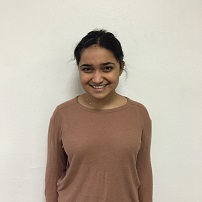

Sarah Haque
Sarah Haque is a first year student in the Neuroscience BS
program at USC. She is interested in the physiological aspects of emotional regulation and the social implications of
different emotional reactions. Her previous research experience includes work at the Chilldren's Safety Initiative at
OHSU, where she explored methods of information dissemination implemented by the local EMS community.